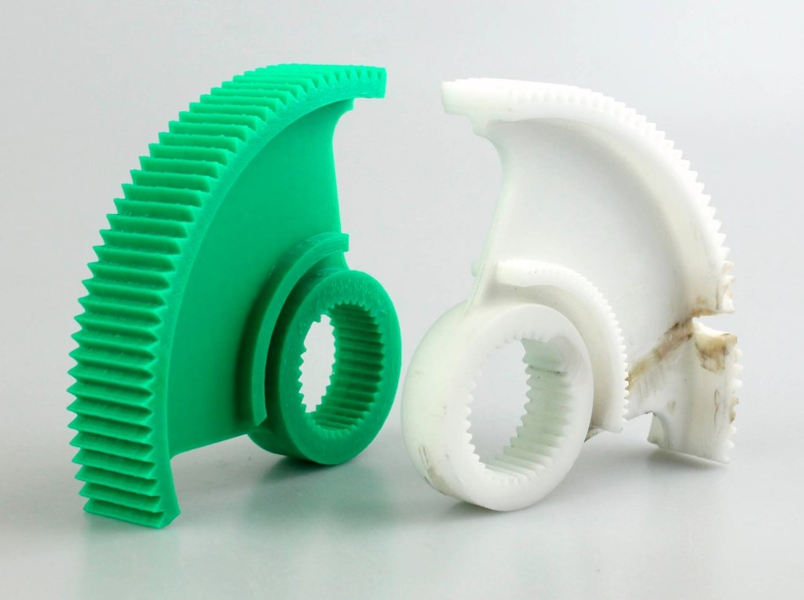

Este trabajo consistió en replicar un engranaje utilizado en una lavadora. Era una pieza fundamental: si se encontraba desgastada o deteriorada, la lavadora no podía funcionar correctamente.
Un cliente nos pidió recrear un engranaje dañado que ya no se producía. Tras varios intentos fallidos por deformaciones y errores, ajustamos los parámetros de impresión, cambiamos el material y logramos un modelo gris funcional, preciso y duradero.
Colaboramos con clínicas dentales para fabricar réplicas exactas de arcadas dentales. Estas piezas permiten planificar tratamientos con precisión, reducir tiempos de espera y eliminar errores manuales gracias a la impresión 3D.
Un cliente buscaba restaurar un mueble antiguo con gran valor sentimental. Escaneamos la perilla original, la modelamos con precisión y la replicamos en 3D. El resultado: una réplica fiel que encaja y mantiene el estilo clásico del mueble.
Cada figura impresa en 3D comienza como una idea: un personaje favorito, una caricatura o un diseño único. En nuestro taller damos vida a esas ideas con impresiones detalladas para coleccionistas y amantes del arte pop. Cada pieza es única, hecha a medida y con acabados de alta calidad.